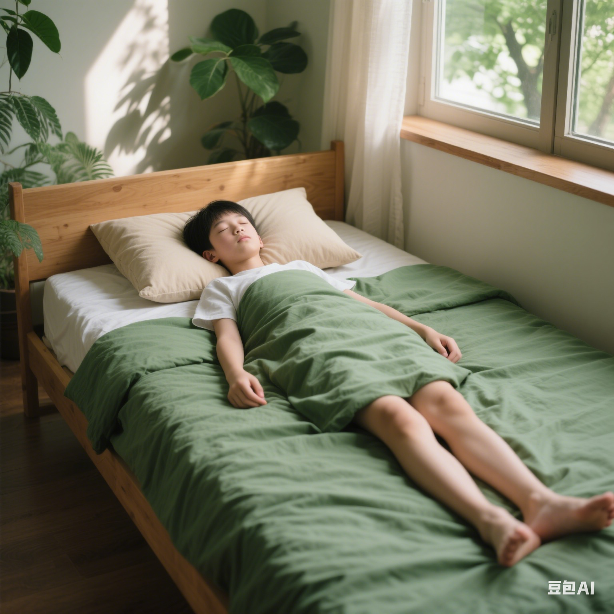
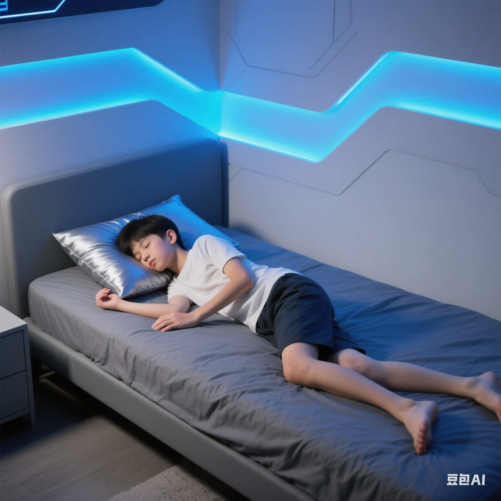

良好习惯，健康体态
日常生活中的小习惯，决定了你的体态健康。让我们一起学习如何通过改善日常习惯来塑造健康体态。
姿势提醒计时器
定时提醒检查你的姿势
长时间保持同一姿势会导致肌肉疲劳和体态问题。使用这个计时器来提醒自己定期调整姿势，活动身体。
20:00
提示：开始计时后，即使切换到其他页面，计时器也会继续运行并在时间到达时提醒你。
姿势提醒
是时候检查你的姿势了！请站起来活动一下，调整坐姿。
睡眠与体态
正确的睡眠姿势

最佳睡眠姿势：
- 仰卧位（平躺）：使用适当高度的枕头，保持颈椎自然曲度；膝盖下可放置小枕头减轻腰部压力。
- 侧卧位：使用较高的枕头，保持颈椎与脊柱在一条直线上；双腿微屈，膝盖之间可放置小枕头。
不推荐的睡眠姿势：
- 俯卧位（趴着睡）：会导致颈部扭转，增加颈椎和腰椎压力。
- 不规则姿势：如蜷缩成一团，长期可能导致脊柱变形。
床垫与枕头选择

床垫选择：
- 硬度适中，既不过软也不过硬
- 能够支撑脊柱自然曲度
- 根据体重和睡眠习惯选择合适的材质
- 定期更换（一般5-8年）
枕头选择：
- 高度应使颈椎保持自然曲度
- 仰卧时枕头高度约为5-10厘米
- 侧卧时枕头高度约为10-15厘米
- 材质应具有一定弹性和支撑力
睡眠对体态的重要性
充足的睡眠对青少年体态健康至关重要：
- 睡眠期间是脊柱放松和恢复的重要时期
- 生长激素主要在深度睡眠阶段分泌，对骨骼和肌肉发育至关重要
- 良好的睡眠有助于肌肉恢复和修复
- 睡眠不足会导致姿势控制能力下降，增加不良姿势的风险
- 青少年每晚应保证8-10小时的睡眠时间